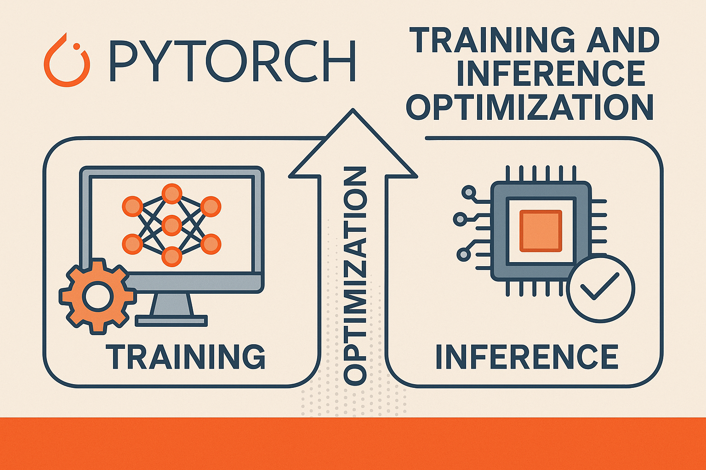

PyTorch Training and Inference Optimization Guide

The guide includes practical code examples you can directly use in your projects, along with best practices and common pitfalls to avoid. Each section builds upon the previous ones, so you can implement these optimizations incrementally based on your specific needs and performance requirements.
General Optimization Principles
1. Use the Right Data Types
import torch
# Use half precision when possible (reduces memory and increases speed)
model = model.half() # Convert to float16
# Or use mixed precision training
from torch.cuda.amp import autocast, GradScaler
# Use appropriate tensor types
x = torch.tensor(data, dtype=torch.float32) # Explicit dtype2. Optimize Data Loading
from torch.utils.data import DataLoader
import torch.multiprocessing as mp
# Optimize DataLoader
train_loader = DataLoader(
dataset,
batch_size=32,
shuffle=True,
num_workers=4, # Use multiple workers
pin_memory=True, # Faster GPU transfer
persistent_workers=True, # Keep workers alive
prefetch_factor=2 # Prefetch batches
)
# Use non_blocking transfers
for batch in train_loader:
data = batch[0].to(device, non_blocking=True)
target = batch[1].to(device, non_blocking=True)3. Tensor Operations Best Practices
# Avoid unnecessary CPU-GPU transfers
x = torch.randn(1000, 1000, device='cuda') # Create directly on GPU
# Use in-place operations when possible
x.add_(y) # Instead of x = x + y
x.mul_(2) # Instead of x = x * 2
# Batch operations instead of loops
# Bad
for i in range(batch_size):
result[i] = model(x[i])
# Good
result = model(x) # Process entire batchTraining Optimizations
1. Mixed Precision Training
from torch.cuda.amp import autocast, GradScaler
model = MyModel().cuda()
optimizer = torch.optim.Adam(model.parameters())
scaler = GradScaler()
for epoch in range(num_epochs):
for batch in train_loader:
optimizer.zero_grad()
# Forward pass with autocast
with autocast():
outputs = model(inputs)
loss = criterion(outputs, targets)
# Backward pass with gradient scaling
scaler.scale(loss).backward()
scaler.step(optimizer)
scaler.update()2. Gradient Accumulation
accumulation_steps = 4
optimizer.zero_grad()
for i, batch in enumerate(train_loader):
with autocast():
outputs = model(inputs)
loss = criterion(outputs, targets) / accumulation_steps
scaler.scale(loss).backward()
if (i + 1) % accumulation_steps == 0:
scaler.step(optimizer)
scaler.update()
optimizer.zero_grad()3. Efficient Learning Rate Scheduling
from torch.optim.lr_scheduler import OneCycleLR
optimizer = torch.optim.AdamW(model.parameters(), lr=0.001)
scheduler = OneCycleLR(
optimizer,
max_lr=0.01,
epochs=num_epochs,
steps_per_epoch=len(train_loader)
)
# Use scheduler after each batch for OneCycleLR
for batch in train_loader:
# ... training step ...
scheduler.step()4. Model Compilation (PyTorch 2.0+)
# Compile model for faster training
model = torch.compile(model)
# Different modes for different use cases
model = torch.compile(model, mode="reduce-overhead") # For large models
model = torch.compile(model, mode="max-autotune") # For maximum performance5. Checkpoint and Resume Training
def save_checkpoint(model, optimizer, epoch, loss, filename):
torch.save({
'epoch': epoch,
'model_state_dict': model.state_dict(),
'optimizer_state_dict': optimizer.state_dict(),
'loss': loss,
}, filename)
def load_checkpoint(model, optimizer, filename):
checkpoint = torch.load(filename)
model.load_state_dict(checkpoint['model_state_dict'])
optimizer.load_state_dict(checkpoint['optimizer_state_dict'])
return checkpoint['epoch'], checkpoint['loss']Inference Optimizations
1. Model Optimization for Inference
# Set model to evaluation mode
model.eval()
# Disable gradient computation
with torch.no_grad():
outputs = model(inputs)
# Use torch.inference_mode() for even better performance
with torch.inference_mode():
outputs = model(inputs)2. TorchScript Optimization
# Trace the model
example_input = torch.randn(1, 3, 224, 224)
traced_model = torch.jit.trace(model, example_input)
# Or script the model
scripted_model = torch.jit.script(model)
# Optimize the scripted model
optimized_model = torch.jit.optimize_for_inference(scripted_model)
# Save and load
torch.jit.save(optimized_model, "optimized_model.pt")
loaded_model = torch.jit.load("optimized_model.pt")3. Quantization
import torch.quantization as quant
# Post-training quantization
model.eval()
quantized_model = torch.quantization.quantize_dynamic(
model, {torch.nn.Linear}, dtype=torch.qint8
)
# Quantization-aware training
model.train()
model.qconfig = torch.quantization.get_default_qat_qconfig('fbgemm')
torch.quantization.prepare_qat(model, inplace=True)
# Train the model...
# Convert to quantized model
quantized_model = torch.quantization.convert(model, inplace=False)4. Batch Processing for Inference
def batch_inference(model, data_loader, device):
model.eval()
results = []
with torch.inference_mode():
for batch in data_loader:
inputs = batch.to(device, non_blocking=True)
outputs = model(inputs)
results.append(outputs.cpu())
return torch.cat(results, dim=0)Memory Management
1. Memory Efficient Training
# Clear unnecessary variables
del intermediate_results
torch.cuda.empty_cache() # Free GPU memory
# Use gradient checkpointing for large models
from torch.utils.checkpoint import checkpoint
class MyModel(nn.Module):
def forward(self, x):
# Use checkpointing for memory-intensive layers
x = checkpoint(self.expensive_layer, x)
return x2. Monitor Memory Usage
def print_memory_usage():
if torch.cuda.is_available():
print(f"GPU memory allocated: {torch.cuda.memory_allocated() / 1e9:.2f} GB")
print(f"GPU memory cached: {torch.cuda.memory_reserved() / 1e9:.2f} GB")
# Monitor during training
for epoch in range(num_epochs):
for batch in train_loader:
# ... training code ...
if batch_idx % 100 == 0:
print_memory_usage()3. Memory-Efficient Data Loading
class MemoryEfficientDataset(torch.utils.data.Dataset):
def __init__(self, data_paths):
self.data_paths = data_paths
def __getitem__(self, idx):
# Load data on-demand instead of keeping in memory
data = self.load_data(self.data_paths[idx])
return data
def __len__(self):
return len(self.data_paths)Hardware-Specific Optimizations
1. GPU Optimizations
# Set optimal GPU settings
torch.backends.cudnn.benchmark = True # For fixed input sizes
torch.backends.cudnn.deterministic = False # For reproducibility (slower)
# Use multiple GPUs
if torch.cuda.device_count() > 1:
model = nn.DataParallel(model)
# Or use DistributedDataParallel for better performance
from torch.nn.parallel import DistributedDataParallel as DDP
model = DDP(model, device_ids=[local_rank])2. CPU Optimizations
# Set number of threads
torch.set_num_threads(4)
# Use Intel MKL-DNN optimizations
torch.backends.mkldnn.enabled = True3. Apple Silicon (MPS) Support
# Use Metal Performance Shaders on Apple Silicon
if torch.backends.mps.is_available():
device = torch.device("mps")
model = model.to(device)Profiling and Debugging
1. PyTorch Profiler
from torch.profiler import profile, record_function, ProfilerActivity
with profile(
activities=[ProfilerActivity.CPU, ProfilerActivity.CUDA],
record_shapes=True,
profile_memory=True,
with_stack=True
) as prof:
for batch in train_loader:
with record_function("forward"):
outputs = model(inputs)
with record_function("backward"):
loss.backward()
with record_function("optimizer"):
optimizer.step()
# Save trace for tensorboard
prof.export_chrome_trace("trace.json")2. Memory Profiling
# Profile memory usage
with profile(profile_memory=True) as prof:
model(inputs)
print(prof.key_averages().table(sort_by="self_cuda_memory_usage", row_limit=10))3. Speed Benchmarking
import time
def benchmark_model(model, input_tensor, num_runs=100):
model.eval()
# Warmup
with torch.no_grad():
for _ in range(10):
_ = model(input_tensor)
# Benchmark
torch.cuda.synchronize()
start_time = time.time()
with torch.no_grad():
for _ in range(num_runs):
_ = model(input_tensor)
torch.cuda.synchronize()
end_time = time.time()
avg_time = (end_time - start_time) / num_runs
print(f"Average inference time: {avg_time*1000:.2f} ms")Best Practices Summary
- Always profile first - Identify bottlenecks before optimizing
- Use mixed precision - Significant speedup with minimal accuracy loss
- Optimize data loading - Use multiple workers and pin memory
- Batch operations - Avoid loops over individual samples
- Model compilation - Use
torch.compile()for PyTorch 2.0+ - Memory management - Monitor and optimize memory usage
- Hardware utilization - Use all available compute resources
- Quantization for inference - Reduce model size and increase speed
- TorchScript for production - Better performance and deployment options
- Regular checkpointing - Save training progress and enable resumption
Common Pitfalls to Avoid
- Moving tensors between CPU and GPU unnecessarily
- Using small batch sizes that underutilize hardware
- Not using
torch.no_grad()during inference - Creating tensors in loops instead of batching
- Not clearing variables and calling
torch.cuda.empty_cache() - Using synchronous operations when asynchronous would work
- Not leveraging built-in optimized functions